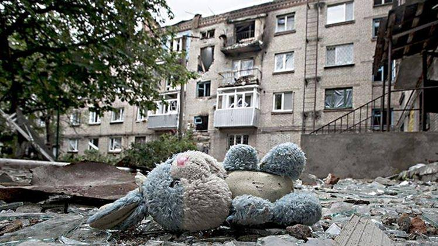

Deux guerres dans la vie d’une génération : interviews des enfants de la guerre (1941-1945) comme source historique
par V. Yu. NOSKOV
La Grande Guerre Patriotique reste un des événements les plus tragiques et importants dans l’histoire de notre peuple. La guerre a marqué les mémoires: collective, symbolique et individuelle. Aujourd’hui encore, un ensemble de représentations, de discours officiels, de débats historiques, associés étroitement à elle, fait que cette guerre demeure à l’esprit tant de l'État qu’individuellement. La guerre a ainsi eu une influence décisive sur la formation de la génération dont l'enfance a coïncidé avec les années 1941-1945. Aujourd'hui, ce sont les représentants de cette génération qui sont les porteurs de la mémoire vivante sur la Grande Guerre Patriotique. Les actions et la vie quotidienne durant la guerre dans le Donbass sont perçus par eux à travers le prisme de l'expérience survécue dans l'enfance. Ce sont leurs histoires, leurs caractéristiques, leurs expériences qui provoquent un vif intérêt et influent significativement sur les générations d'après-guerre, en partageant notamment leur expérience des conditions de vie durant la guerre.
Parmi les nombreuses études sur les guerres dans l'histoire de l’humanité, les actions de guerre, la géopolitique, la politique intérieure, l'économie, l'idéologie sont souvent abordés mais une place particulière appartient à la vie quotidienne durant ces guerres. La guerre change radicalement l'existence de gens : en prenant impitoyablement des vies, en transformant celle des survivants, en dispersant les proches aux différentes parties du monde. L'étude de la vie quotidienne durant la guerre implique, tout d'abord, l'utilisation de sources d'origine personnelle. L'application de la méthodologie de l'histoire orale donne des possibilités particulières pour les recherches. Les interviews avec les représentants de la génération, dont l'enfance a coïncidé avec les années de la Grande Guerre Patriotique et la vieillesse - avec la période de conflit armé dans le Donbass, sont une ressource d’infirmations d’une richesse exceptionnelle.
Dans les années 2007-2015, l'auteur a interrogé 49 témoins, mineurs durant la Grande Guerre Patriotique, et qui au moment de l'interview demeuraient dans les villes de Donetsk et de Konstantinovka, dans le village d’Ivanopolié du domaine de Konstantinovka de la région de Donetsk. L'éventail des questions a permis de mettre en lumière les impressions du début de la guerre, de l'occupation ou de l'évacuation, du licenciement, de la fin de la guerre, de la vie quotidienne, des fêtes et des études. Au début de la guerre, les personnes interrogées demeuraient sur le territoire des régions de Vinnitsa, de Soumy, de Tchernigov, de Kharkov, de Zaporojié, de Stalino (de Donetsk), de Dniepropetrovsk de la RSS d'Ukraine, aussi bien que des régions de Koursk et de Leningrad de la RSFS de Russie, de la RSS de Géorgie et de la RSS de Lituanie.
Dans le corpus de mémoire de la Grande Guerre Patriotique, l'image fixe, pleine d’un contenu émotionnel profond, est celle du 22 juin 1941 - du premier jour de la guerre et occupe une place particulière. Les circonstances dans lesquelles les gens ont découvert et ont pris conscience de ce fait, sont devenues l’un des moments les plus forts dans la formation des souvenirs de la guerre, dans les œuvres littéraires et documentaires, dans les mémoires. Le souvenir commun, à tous ceux qui sont aujourd’hui devenus adultes, demeure la prise de connaissance du fait du début de la guerre au moment de sa déclaration.
Les documents, recueillis par l'auteur en 2007-2015, sur l’histoire orale de l'enfance en URSS, ont permis d'identifier plusieurs autres accents de la perception d'enfant du début de la guerre : chez les enfants certaines informations (entendues à la radio, des parents, des enseignants, des autres enfants) ne sont pas restées dans leur mémoire ou bien seulement partiellement. La déclaration de guerre, elle-même, est conservée en mémoire généralement par les témoins nés entre 1926 et 1936, et seulement quelques-unes des personnes interrogées peuvent clairement décrire les circonstances dans lesquelles ils ont appris cette déclaration. Néanmoins, une exception est dans le témoignage de Madame M.I. Gribannikova, qui demeurait alors à la station de Sinel’nikovo de la région de Dnepropetrovsk. Elle souvient : « Quand la guerre a commencé, je venais de terminer la 7e classe, nous avons passé les examens et le 22 nous apprenions la déclaration de la guerre. Alors nous, tous les enfants, pleurions. Ce fut un choc terrible ».
En 1941, les enfants prenaient progressivement conscience de ce que représente la guerre. On peut supposer que cette différenciation est due à l'âge et des facteurs éducatifs : les enfants plus âgés et plus éduqués s’appuyaient plus sur les nouvelles de la déclaration officielle de guerre. A contrario, les personnes interrogées plus jeunes ont des souvenirs qui correspondent à leurs propres sentiments, à l'expérience de ce qu’ils ont vu, et non de ce qui a été énoncé et entendu. La guerre pour la plupart des enfants a commencé non par une nouvelle formelle, mais par les moments décisifs de leurs propres biographies : un appel du père au front, des attaques aériennes, le début de l'occupation.
Les bombardements ont été un fait décisif dans la prise de conscience de la guerre pour la plupart des personnes interrogées. Ce sont les raids aériens de l'aviation fasciste qui ont immédiatement et radicalement changé la vie quotidienne, ont apporté le danger, la peur et la destruction. Dans une interview prise par l'auteur il y a, parmi les témoignages, une des scènes les plus émouvantes et détaillées. Ninel Anatolievna Noskova, qui demeurait pendant la guerre à la ville d'Artiomovsk, se souvient : « Je me rappelle les fenêtres ont été voilées, les avions ronronnaient. C'était l'horreur, le rêve principal était que le silence se fasse; ce ronron choquaient l’oreille ».
Avec l’image du début de la guerre, les interviews permettent d'analyser tels événements clés de la Grande Guerre Patriotique comme la mise en place du régime d'occupation, la déportation forcée, l’évacuation dans les régions arrière de l'URSS, la libération de la région contre les envahisseurs, le Jour de la Victoire.
Contrairement à la Grande Guerre patriotique, les conditions contemporaines du Donbass sont différents. Nous sommes aujourd’hui dans une guerre civile avec des éléments de libération nationale. Un facteur important dans la formation et la transformation de son image dans la conscience collective est la progressivité de l’apparition et l’exacerbation d'un conflit civil. L'escalade de la violence s’est déroulée pendant une période considérable de temps, saturée par des événements différents, y compris emblématiques : la révolte sur le Maïdan, les manifestations en mars et avril 2014 dans les villes du sud-est de l'Ukraine, « le Khatyn d'Odessa », la fusillade de la manifestation le 9 mai 2014 à Mariupol, les bombardements massifs des villes de Donbass, qui ont commencé en mai 2014, la formation de l’armée de milice etc.
L’analyse des vidéo-interviews et des interviews publiées sur Internet, réalisée par l'auteur, permet de faire la conclusion que l'élément clé de l'image de la guerre contemporaine dans le Donbass est le bombardement des villes. Ces bombardements sont souvent associés à l’image des attaques aériennes de la Luftwaffe et des destructions qu'ils ont causées.
Pour les gens dont l'enfance a coïncidé avec la Grande Guerre Patriotique, l’assertion suivante est souvent incontournable : « Seulement les fascistes peuvent bombarder les villes pacifiques ». Par conséquent, leurs estimations, basées sur leurs expériences personnelles, acquissent une grande crédibilité et deviennent un facteur important dans la formation de la conscience collective des habitants du Donbass, en particulier dans la génération d’une image correspondant de l’armée ukrainienne, de la garde nationale de l'Ukraine et des formations paramilitaires pro-ukrainiennes.
Ainsi, on peut faire la conclusion que l'image de la Grande Guerre Patriotique dans l'esprit des enfants soviétiques est concentrée non à la chronologie de la guerre, mais aux événements associés à l'expérience individuelle. L'étude de l'histoire de l'enfance de guerre, y compris par les méthodes de l'histoire orale, a non seulement une perspective scientifique, mais aussi une importance pratique. L'attention à la vie quotidienne reflète la compréhension de la valeur de l'expérience de chaque personne. L'expérience de la génération des enfants de la Grande Guerre Patriotique permet de comprendre la transformation complexe de la conscience collective des habitants du Donbass contemporain. Cette expérience est très importante pour la réhabilitation psychologique et la socialisation des enfants, qui se sont trouvés dans les réalités d’une guerre.
Partager cette page